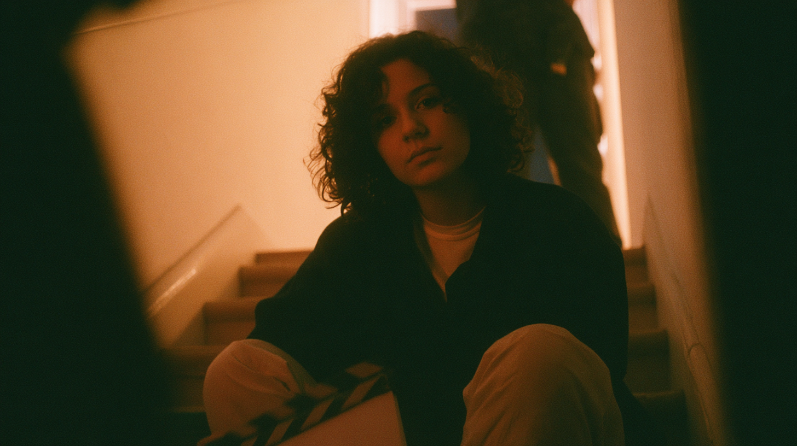
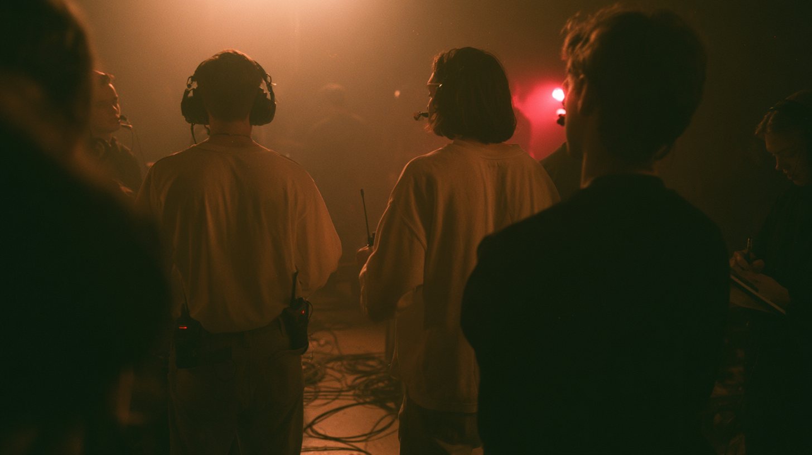
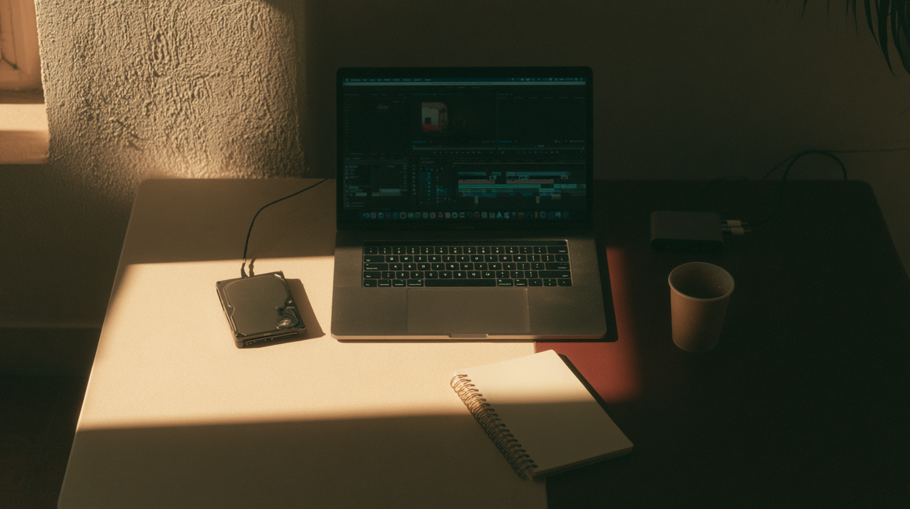
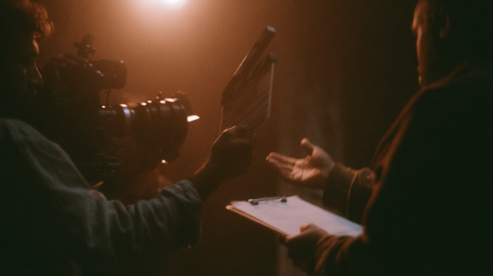
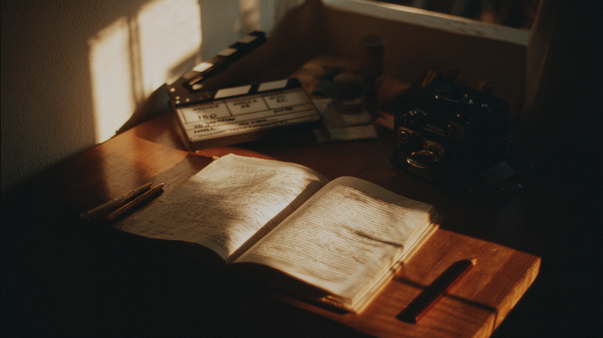
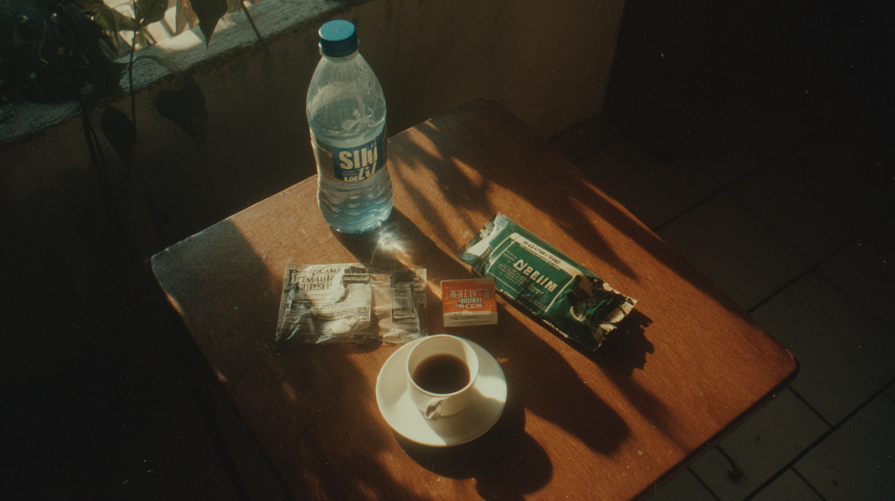
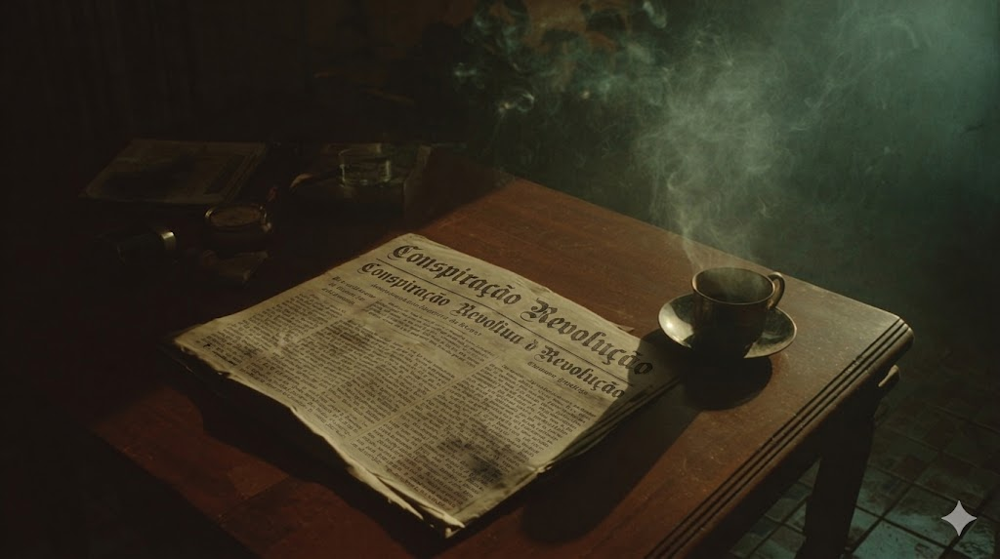
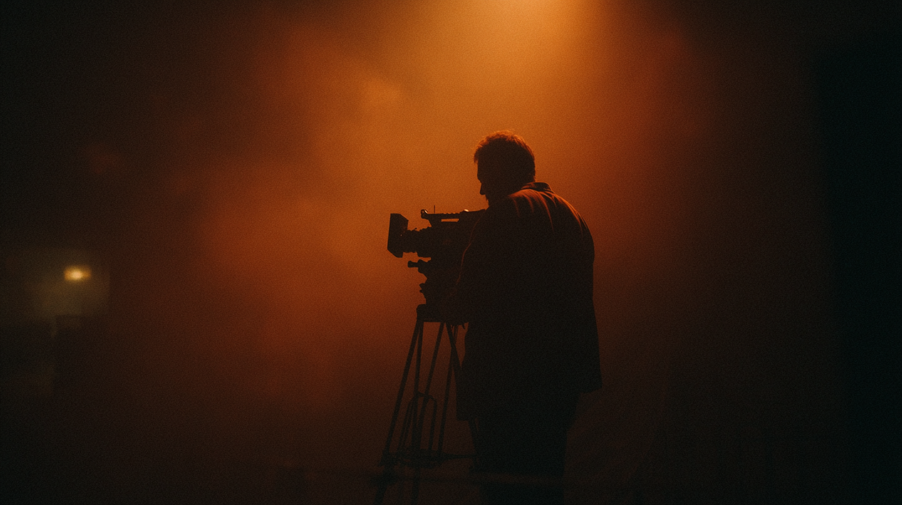
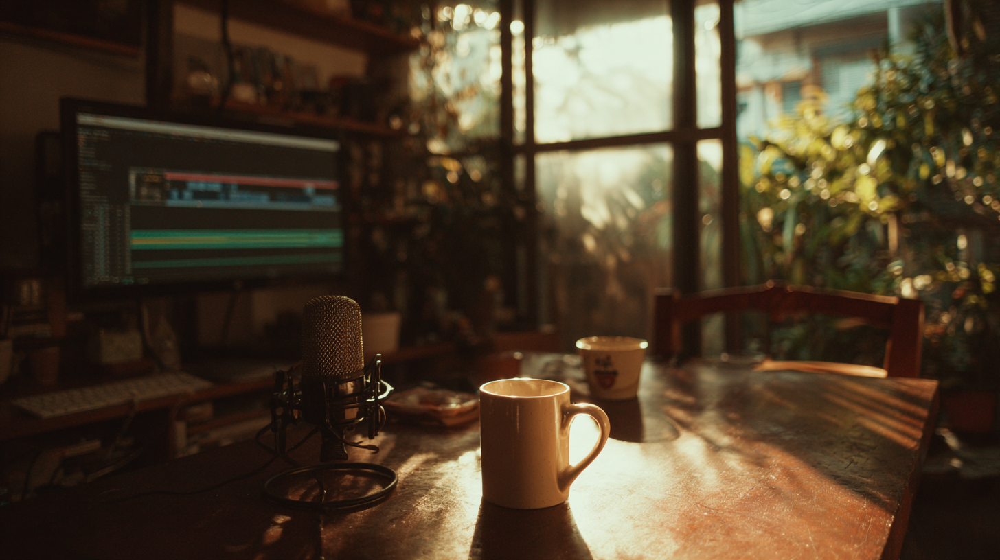

Cada texto que já passou por aqui, do glossário inventado ao collab com o Lado P(op). Escolha por onde começar.

Spoiler: não. Mas calma, ainda dá pra passar muito sufoco no caminho. A boa notícia é que a gente explica tudo.

O audiovisual é uma mini cidade funcionando ao mesmo tempo. Vem conhecer os cargos que mantêm esse caos organizado.

10 coisas que podem salvar a vida de quem quer viver de audiovisual sem vender um rim. Canva, DaVinci, HD externo e mais.

Para a comunidade LGBTQIAP+ que quer entrar no audiovisual: sua história não é nicho, sua presença não é cota.
Natália Borges Polesso, Aline Bei, Jeferson Tenório e mais. Leitura que treina o olhar e não precisa de equipamento.

Boletofobia, renderança, cachêmico. Seis verbetes inventados para os sentimentos do audiovisual que o português ainda não nomeou.
Um texto sem respostas e sem ponto final, só perguntas. As dúvidas de quem quer trabalhar com cinema e nunca disse em voz alta.

Não tem ovo nem farinha. Ingredientes e modo de preparo para atravessar o primeiro dia de filmagem sem queimar no meio.

Um conto de Lima Barreto, de 1911, sobre construir uma carreira inteira no blefe. Trecho transcrito e uma conversa sobre o porquê.

Inspirado em Machado de Assis. No set, como na vida, quem faz o trabalho de verdade nem sempre é quem recebe o aplauso.

Conversa com quem começou carregando equipamento e hoje assina a montagem de séries. Sobre dinheiro, desistir e recomeçar.
Textos individuais da equipe sobre aquela cena guardada lá atrás, quando uma imagem mexeu com a gente antes da gente saber o porquê.
O prompt, a versão crua da máquina e a nossa versão revisada lado a lado. Cortar, tirar clichê e trazer corpo para o texto.
Um miniconto sobre o primeiro dia de set, quando o cansaço e o encantamento chegam juntos. Por Murilo Capelo.
Em parceria com o blog Lado P(op): supervisão musical, licenciamento e o caso Kate Bush. A música na cena é mais complicada do que parece.